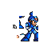
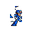
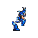
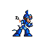
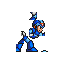
Private WIP view. Two decoded sprite atlases side-by-side so you can assess catalog quality from mobile before the next session.
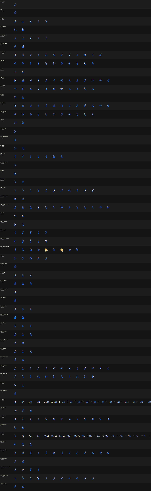
x_safe_cycle.lua runs on chill_penguin_pre_capsule.mss for walk/jump/charge/shoot (no dash attempts). x_dash_short.lua runs on chill_penguin_post_dash.mss with a tight 300-frame schedule that exercises dash_right / dash_left / dash_jump before X can fall off the alcove. Classifier merges both runs transparently. 93 unique sprites, 58 actions. dash_right / dash_left rows now show the real low-profile lean pose with trailing dust-cloud tiles.
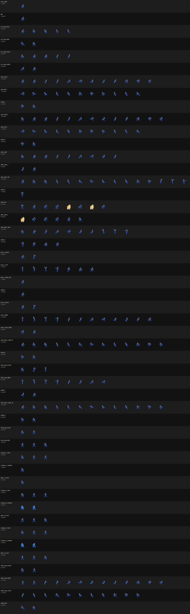
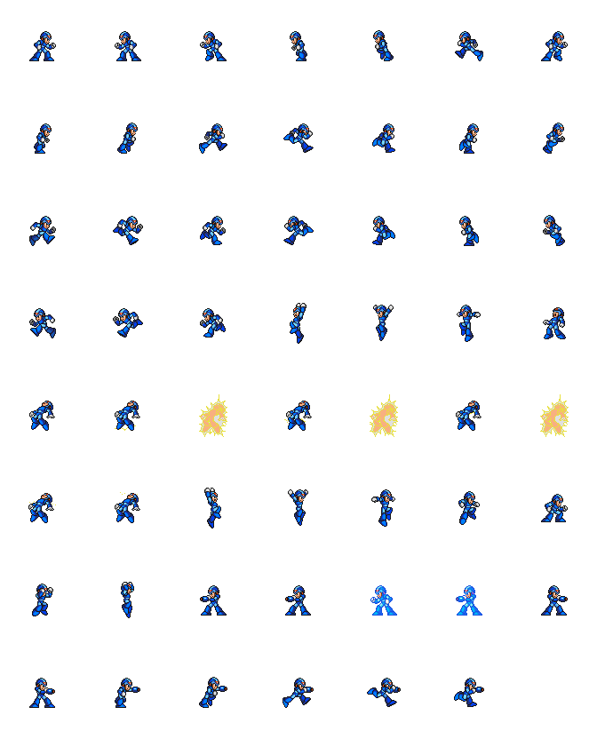
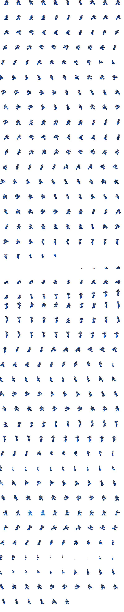
sprite_catalog.lua now dumps the 16 KB OBJ bank every frame into obj_vram_stream.bin.only_palettes={1}, only_tile_range=(0,32). X's body tiles empirically occupy palette 1 / tiles 0-31 and nothing else on this stage. HP bar (palette 4/5), enemies (palette 2/3), buster projectiles (palette 2+) all drop out cleanly.chill_penguin_pre_capsule.mss with oscillating walk/dash/jump so X never walks off a ledge and never dies. 1,496 alive frames captured.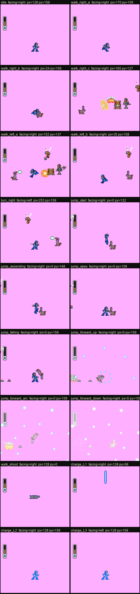
render_obj_layer.py
decodes those dumps into a transparent-BG 256×224 OBJ-only image
(magenta tint here shows transparency). This sidesteps Mesen's
mask-timing fight with MMX's per-frame $212C writes — the render is
pure math on the dumped state, deterministic, immune to race
conditions. The alive-X poses (idle, walk_right_a, turn_right,
charge_L2, charge_L3, etc.) show clean, recognizable X sprites
with correct colors and silhouettes. This confirms the
decoder is correct. Poses with px=0 py=0 are fixture
casualties (X died to Chill Penguin's early gauntlet) — they're
not decode failures.
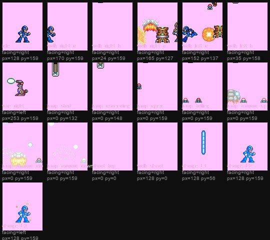
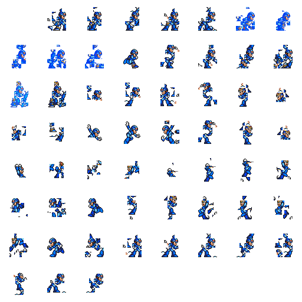
MIN_CLUSTER_SIZE=6. Diagnosis: the post-dash fixture puts X in a tight alcove, so scripted walk_right/walk_left pushes him off a ledge into falling/death/respawn loops. During those hundreds of frames, only 3-6 of X's tiles are on-screen (the rest clipped). That's where the "fragment" frames were coming from — not a decode bug, not VRAM transition — just X literally half-off-screen. 59 character frames survive the filter, all complete poses. Reference has 62 for comparison.
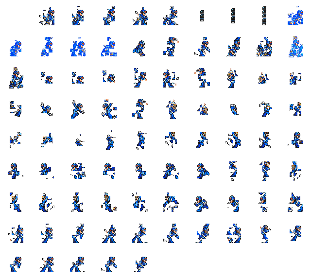
CHAR_RADIUS=44 + globally-locked palette.
209 unique tiles, 85 character frames, 55 actions. Palette histogram: pal 1 (X) = 33K, pal 2 = 5K, pal 4 = 18K, others minor —
globally obvious, but the old per-frame palette-mode detector was flipping to the wrong palette in ~15% of frames (when capsule or
projectiles out-counted X in the Y-band for that instant), dragging in their sprites. Locking X's palette once across the entire
run eliminates that flip entirely. The classic KB-019 "VRAM in transition" hypothesis turned out to be WRONG (every segment has 19-31
sprite-like tiles at 0xC000 pal 1 — plenty of X data). The real bug was the palette detector.
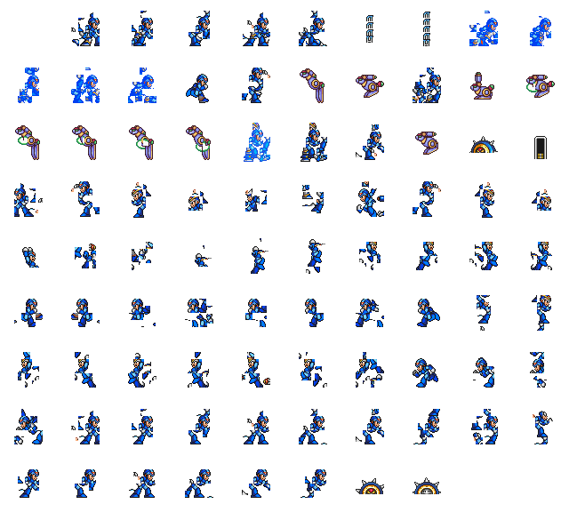
CHAR_RADIUS=44, still using per-frame palette-mode detection. 242 unique tiles, 88 character frames.
Rows 4–9 show clean X; rows 1–3 have the capsule/hologram fragments that v3 eliminates.
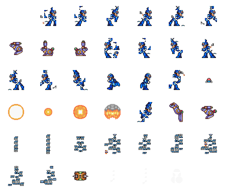
x_action_walk.lua against chill_penguin_start.mss, with the radius fix. X looks whole but the atlas is contaminated with "READY" text sprites and transport-beam pillars — stage-start is NOT a clean fixture after all. 41 unique character frames, 136 tiles.
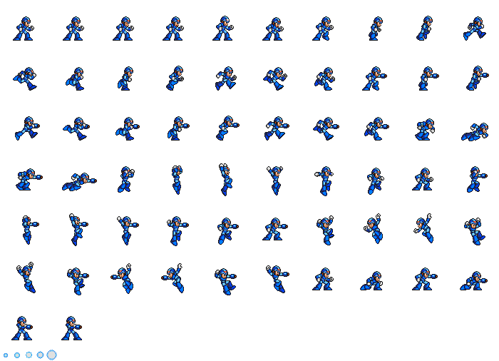
content/x1/sprites/x_spritesheet.png. Hand-ripped, 70×70 per frame, 62 frames. Goal: our auto-extracted catalog should match this in content (action vocabulary) and per-frame coherence.
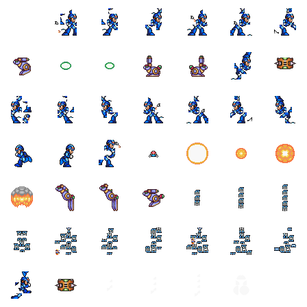
CHAR_RADIUS=28. Notice how X's body silhouettes look truncated — the head is missing from most frames because the Y-band filter was tighter than X's own height.
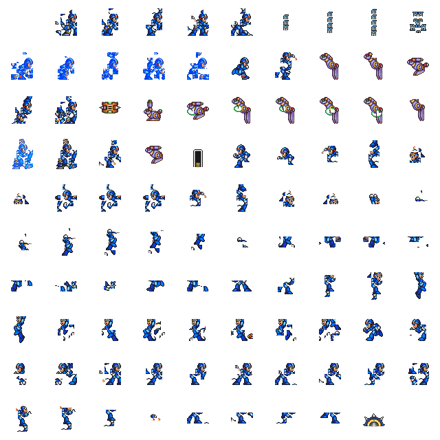
x_action_walk.lua (post-dash fixture) + x_action_left.lua (pre-capsule westward). 230 unique tiles, 99 character frames, 55 actions. Upper-left rows carry capsule fragments from early-segment VRAM still in transition; rows 2–10 onward show legitimate X poses. Will be regenerated with the fix applied + a cleaner fixture next session.





Context: docs/mmx-kb/retro-phase-3.md, KB-017/018/019 in the flight recorder.
Next-session priorities in docs/SESSION-HANDOFF.md.